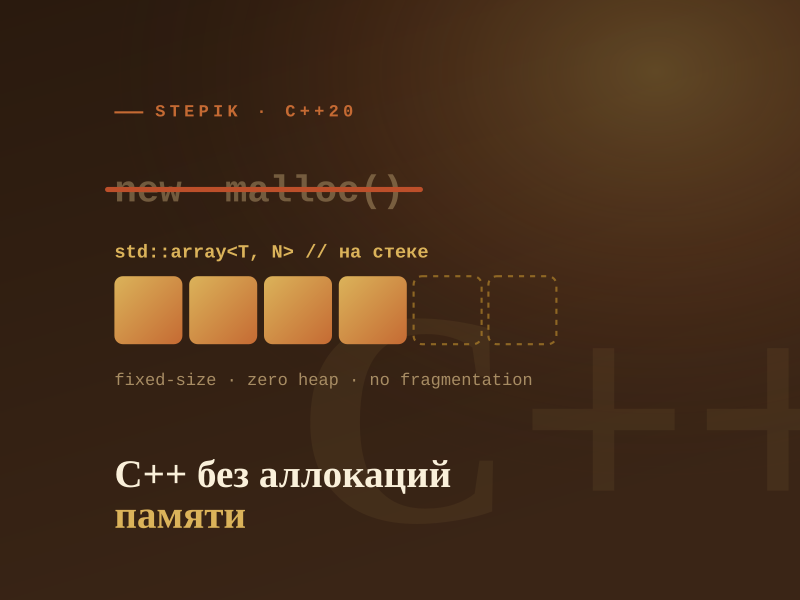

Game++. Устройство и оптимизация игрового движка
Как современный игровой движок устроен изнутри: архитектура, подсистемы и приёмы оптимизации — на практике.
Заметки о C++, производительности игровых движков и реверс-инжиниринге игр девяностых. Пишу с 2014 года.
Сложность приходит вместе с числом: 16 мс, 5 ГБ памяти, лимит патча. Как её покупают, почему два ограничения хуже одного дважды и куда переезжает бюджет после удачной оптимизации.
↗ РемеслоVampire Survivors на Phaser, Balatro на Löve и монолитный GameManager против EventBus и IAudioSystem: почему бюджет сложности конечен и тратить его надо туда, где игрок это увидит.
↗ C++vector<vector<uint>> на миллион локаций: 72 байта на 24 полезных и 90 мс на снапшот. «Посчитать, потом выделить», префиксная сумма в одном буфере и CSR — сборка быстрее в 17 раз, снапшот в 23.
Как современный игровой движок устроен изнутри: архитектура, подсистемы и приёмы оптимизации — на практике.

Свободная книга — скачивайте бесплатно в PDF или EPUB.
Черновик книги о прагматичном и «понятном через год» C++.
Черновик книги — доступ по запросу.

Современная open-source реализация классического градостроителя Pharaoh (1999) от Impressions Games. Полная совместимость с сохранениями оригинала, кроссплатформенность и живой, читаемый код.
Об игреКоллекция из десятков анимированных индикаторов загрузки для Dear ImGui — спиннеры, прогресс-бары и точки в одном заголовочном файле. Просто подключаешь imspinner.h и зовёшь нужный спиннер.

Курс среднего уровня о том, как писать на C++ без динамических аллокаций кучи: какие возможности языка и STL безопасны в условиях ограниченных ресурсов — в embedded и геймдеве — без потери современного C++ и ООП.